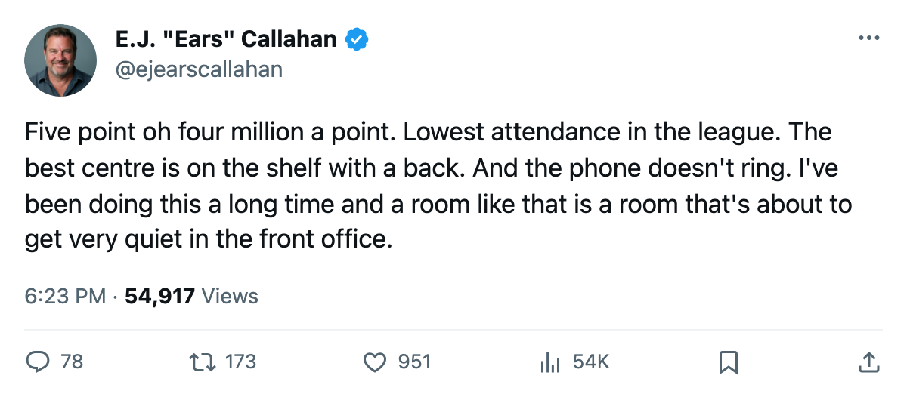
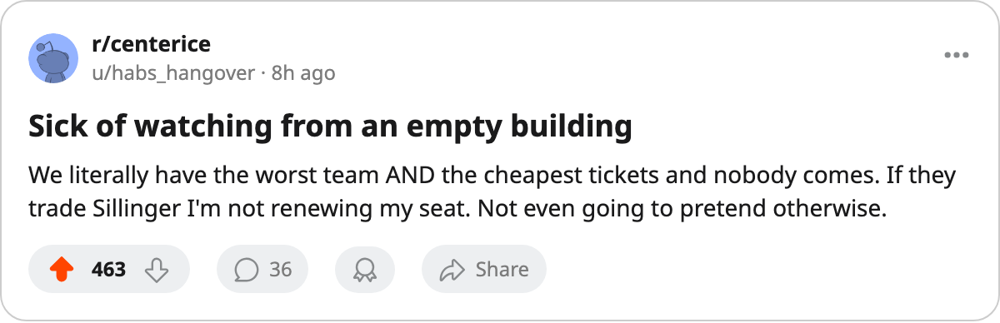

Payroll Dumps: Phoenix Pays $5.04M a Point. The Room Has 11,437 Fans. Nobody Has Called.
The most expensive hockey in the league is in the desert, it's 4-13-1, and the trade deadline is 119 days away.
 E.J. "Ears" CallahanInsider · The Hot Stove
E.J. "Ears" CallahanInsider · The Hot Stove

Phoenix as a seller with zero buyer calls logged

 Phoenix Coyotes costs $5.04M per point. That is the worst rate in hockey. Chicago is next at $4.87M, Ottawa at $4.56M. Phoenix is ahead of both of them in the wrong direction, and their building has 11,437 seats filled, the lowest number on any sheet in this league.
Phoenix Coyotes costs $5.04M per point. That is the worst rate in hockey. Chicago is next at $4.87M, Ottawa at $4.56M. Phoenix is ahead of both of them in the wrong direction, and their building has 11,437 seats filled, the lowest number on any sheet in this league.
The Coyotes are 4-13-1 with 11 points, dead last in the standings and in goals for at 36. Their payroll is $55.41M. The trade deadline is what the calendar has as the trade deadline: 119 days away. If this roster is going to be broken up, the phone should be ringing already.
Nobody's dialing.
The bodies on the shelf
 Mike Sillinger83 is out until December 31 with a back. He carries 87 in the Book, the highest-rated player on the roster.
Mike Sillinger83 is out until December 31 with a back. He carries 87 in the Book, the highest-rated player on the roster.  Brian Savage74 is out until December 18 with a wrist, at 78. That's your top two available bodies, and both are shelved. A GM looking at Phoenix sees a centre who can't play and a winger who can't play, and nobody has called.
Brian Savage74 is out until December 18 with a wrist, at 78. That's your top two available bodies, and both are shelved. A GM looking at Phoenix sees a centre who can't play and a winger who can't play, and nobody has called.
The free-agent pool reads zero. The sign-and-injure pattern has eaten every name the wire had. A contender looking for a second-line centre in March has very few options, and one of them is in Phoenix with a back that won't clear until the holiday.
The morale floor nobody talks about
Club average sits at 88.6, fifth-lowest in the league. Yves Mckay66 reads 74 on the Morale Scale, 69 in the Book, $0.91M, and his contract has 0 years left. He's appeared in 2 games at 4.5 minutes a night. He is the only expiring contract on this sheet that the Bureau flags for the desk, and the market hasn't blinked.
Phoenix earns $32.97M and clears $12.55M in profit, so they aren't selling for money. 11 points at $5.04M a point, 19 games in, and the front office hasn't moved.
What a seller looks like
A contender chasing a top-nine centre with playoff experience gets Sillinger at 87, a back injury that clears December 31, and $9.90M... wait, no, his salary isn't printed here. What's printed is the per-point rate, the record, the attendance, and the silence on the phone.
The last time a team this expensive and this bad went quiet this long, the room got worse. Buffalo is at $4.10M a point and 14 points, and they still have three players at 74 on the Morale Scale. Phoenix is ahead of them in both categories: more expensive, fewer points, same emptiness in the building.
One flame, no sources. The sheet just says $5.04M a point and 11,437 fans and a man with a back who can't skate, and nobody has picked up the phone.

